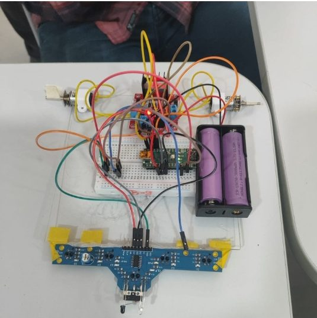
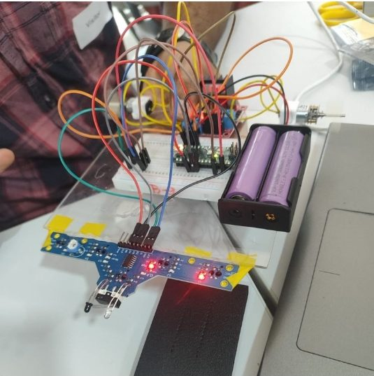

The situation
I had an incredible opportunity to collaborate with Sreenidhi Institute of Science and Technology (SNIST) and dive into the world of robots. The work was hands-on: learning, experimenting and creating.
What I tried
Together we built a line-following robot with an Arduino, a breadboard, a sensor module and a battery pack.
What happened
The whole team came together as a learning community, sharing ideas, solving problems and growing together. That is what made it special.
What I learned
Moments like these remind me why I love what I do. Being a learner first keeps me honest as a teacher. It also feeds the line-following robot lessons I run with students.
Thanks to Aprajita Ralli, Kayiprath Rajesh and Afreen Shaikh for the opportunity, and to the colleagues and SNIST team who built alongside me.

